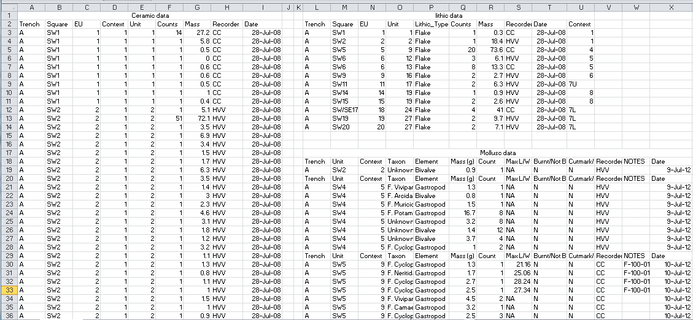
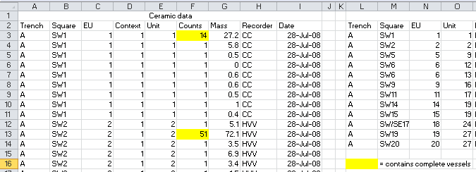

9 Organiser ses données
9.1 Variables et observations
Les feuilles de calcul sont omniprésentes en archéologie, comme dans de nombreux autres domaines. Pour de nombreux chercheurs, la feuille de calcul est le pivot de leurs activités d’analyse de données. Ils y collectent des données, analysent et visualisent les résultats et ils copient et collent les données de la feuille de calcul vers leurs rapports et manuscrits pour la publication. Les tableurs sont utiles pour collecter des données, mais ils sont inefficaces pour l’analyse (lorsque vous souhaitez modifier une variable ou effectuer une analyse avec un nouveau jeu de données, vous devez généralement tout refaire à la main), et ils rendent votre travail analytique difficile à suivre. En effet, les tableurs fonctionnent principalement par des opérations de glisser-déposer effectuées à l’aide de la souris et n’imposent donc pas un ordre linéaire facile à suivre.
En bref, l’utilisation de feuilles de calcul pour l’analyse des données est néfaste pour la reproductibilité et la transparence de votre recherche. Dans cette section, nous allons passer en revue quelques règles d’organisation des données dans les feuilles de calcul afin de faciliter leur exploitation. Ces règles sont valables pour tout langage de programmation, que vous utilisiez R, Python ou Julia.
Lors de l’acquisition puis lors de la préparation de vos données en vue d’une étude, toutes vos actions doivent être guidées par un impératif : structurer au mieux vos jeux de données pour en faciliter l’analyse.85 Les principes régissant cette étape de structuration (data tidying) sont exposés par Wickham86, qui propose ainsi une approche pour lier “la structure d’un jeu de données (sa mise en forme) avec sa dimension sémantique (sa signification).”
Des jeux de données bien structurés se présentent sous la forme de tableaux à deux dimensions (lignes et colonnes) contenant des valeurs. Chaque valeur correspond à une observation d’une variable particulière, en conséquence :
- Chaque variable doit correspondre à une colonne du tableau.
- Chaque observation doit correspondre à une ligne du tableau.
- Un tableau doit correspondre à une unique unité d’observation87.
Dans le cas de données tabulaires, utilisez le format CSV.
Les règles sont les suivantes : premièrement, placez toutes vos variables dans leurs propres colonnes (une variable est la caractéristique mesurée, comme la masse ou la longueur) et, deuxièmement, placez chaque observation dans sa propre ligne. La violation la plus courante de ces règles consiste à ne pas placer chaque variable dans sa propre colonne, de sorte qu’une même colonne représente plus d’une variable.
Par exemple, le tableau ci-dessous est partiellement structuré. Chaque observation (c’est-à-dire chaque site archéologique) correspond bien à une ligne et le tableau dans son ensemble décrit une unique unité d’observation. Cependant, c’est un exemple typique de violation de la première règle.
| secteur | materiau | total |
|---|---|---|
| A | cuivre | 5 |
| A | ceramique cuivre | 9 |
| A | ceramique os | 30 |
| B | ceramique os | 12 |
| B | ceramique | 40 |
| B | ceramique os cuivre | 32 |
La colonne materiau, contient le type de matériau observé sur chaque site. Sous cette forme, il est difficile de regrouper les sites par caractéristiques, par exemple pour n’extraire que les sites contenant des ossements. Une approche plus structurée serait d’avoir une colonne pour la présence de céramique, une colonne pour la la présence d’alliages cuivreux, et ainsi de suite. Chacune de ces colonnes peut alors être exploitée individuellement, et nous avons un contrôle plus fin sur les données.
| secteur | ceramique | cuivre | os | total |
|---|---|---|---|---|
| A | 0 | 1 | 0 | 5 |
| A | 1 | 1 | 0 | 9 |
| A | 1 | 0 | 1 | 30 |
| B | 1 | 0 | 1 | 12 |
| B | 1 | 0 | 0 | 40 |
| B | 1 | 1 | 1 | 32 |
Il est souvent tentant de combiner plusieurs informations dans une seule cellule, car cela permet d’accélérer la collecte des données en réduisant le temps passé à naviguer entre les champs. S’il vous est impossible d’éviter de combiner des informations dans une seule cellule, ou si les données ont été collectées par quelqu’un d’autre et qu’elles présentent déjà ce problème, il existe dans R des méthodes de nettoyage et de séparation que nous explorerons au chapitre 12. L’essentiel ici est de nettoyer et d’ordonner les données avant de les analyser et avant de les archiver pour que d’autres puissent les utiliser.
La deuxième caractéristique des données ordonnées (chaque ligne du tableau correspond à une observation), est facile à réaliser lorsque l’on enregistre les données d’un ensemble de spécimens, tels que des artefacts ou des restes de faune. Dans cette situation, il est naturel qu’un artefact soit représenté par une ligne du tableau. Il est moins naturel de suivre cette règle lorsque, par exemple, chaque ligne représente un site, et que certaines des colonnes sont des comptages de types de poteries. Dans ce cas, la forme propre et ordonnée serait une ligne pour chaque combinaison site/type de poterie, mais cette forme est très peu pratique pour la collecte de données. Ainsi, pendant l’acquisition des données, nous pouvons tolérer un peu de désordre afin d’optimiser la vitesse et la commodité de la saisie des données. Dans le chapitre 12, nous explorerons les méthodes permettant de rendre les données collectées sur le terrain vraiment ordonnées et adaptées à leur exploitation.
En revanche, la troisième caractéristique des données ordonnées (un tableau doit correspondre à une unique unité) est simple à mettre en œuvre. Au sein d’une feuille de calcul, chaque feuille ne doit contiennir qu’un seul tableau. Chaque feuille doit comporter un seul rectangle contigu de données. Il faut donc résister à la tentation d’organiser une grille de petits tableaux sur une seule feuille (fig. 9.1). Bien qu’il s’agisse d’une stratégie courante pour organiser les données, car elle permet de jeter un coup d’œil sur les petits tableaux pour les comparer, elle pose un sérieux problème : chaque ligne de cette feuille contient plus d’une observation, une ligne couvrant plusieurs petits tableaux. De même, les noms des colonnes sont susceptibles d’être dupliqués car ils apparaissent dans chacun des petits tableaux. Ces complications rendent plus difficile le nettoyage et l’organisation de vos données sous une forme utile pour l’analyse et la visualisation. La règle est de créer un tableau par feuille, et si vous suivez cette règle, l’organisation finale de vos données pour l’analyse sera beaucoup plus simple et rapide. En apportant de petits changements à la façon dont vous organisez vos données dans les feuilles de calcul, vous pouvez avoir un impact considérable sur l’efficacité et la fiabilité des étapes d’analyse.

Figure 9.1: Cette capture d’écran montre des données archéologiques désordonnées : plusieurs tableaux sur une feuille, plusieurs valeurs dans une colonne, plusieurs lignes d’en-tête pour un tableau, etc.
Au niveau le plus granulaire de la collecte de données, on trouve la cellule individuelle d’une feuille de calcul (ou le champ de saisie des données). De mauvaises habitudes dans la saisie des données peuvent nécessiter un temps considérable pour les corriger avant que ces dernières ne soient adaptées à l’analyse, et peuvent conduire à des erreurs, quel que soit le logiciel que vous utilisez. Nous passons ici brièvement en revue certaines des erreurs courantes d’organisation des cellules dans l’espoir que si vous en êtes conscient, vous serez peut-être motivé pour les éviter dans votre collecte de données.
Le choix d’une valeur nulle adaptée nécessite une réflexion approfondie. Lorsque vous savez que la valeur est égale à zéro, vous devez bien sûr entrer zéro. Cependant, lorsque la valeur n’a pas été mesurée, ou n’a pas pu être mesurée, vous ne voulez pas entrer zéro car cela implique que vous savez quelque chose sur la valeur. Vous ne voulez pas non plus laisser ce champ vide, car cela pourrait être interprété comme une omission de l’enregistrement de cette donnée. Les cellules vides sont ambiguës : le collecteur de données a-t-il omis ce champ par accident, ou n’a-t-il pas été en mesure d’enregistrer une valeur pour ce champ, ou encore la valeur était-elle nulle ? Le meilleur choix dans cette situation est d’utiliser NA (Not Available) ou NULL.88 NA est un bon choix, car il s’agit d’un mot spécial (ou réservé) dans le langage R (R peut donc gérer les NA facilement). NULL peut être préférable si vos données utilisent NA comme abréviation, par exemple “Nouvelle-Aquitaine” (NULL est également un mot spécial dans R).
Un autre point problématique (néanmoins courant) lors du passage de la collecte à l’analyse des données concerne l’utilisation de formatage dans les feuilles de calcul pour transmettre des informations. Par exemple, lorsqu’une cellule comporte un texte en couleur ou est surlignée pour indiquer une information supplémentaire sur ce spécimen ou cet enregistrement (fig. 9.2). Des problèmes similaires se produisent lorsque du texte en gras ou en italique est utilisé pour signaler une qualité importante des données. Ce type d’utilisation est bien connu dans les tableaux publiés (par exemple l’utilisation du gras pour indiquer des valeurs statistiquement significatives). Cependant, cette décoration des cellules et du texte pour transmettre de l’information rend très difficile le calcul sur ces valeurs. Il est toujours préférable d’avoir une autre colonne pour capturer cette information, plutôt que de mettre en évidence la cellule ou de formater le texte.

Figure 9.2: Cette capture d’écran montre le formatage d’une feuille de calcul. Dans ce cas, le surlignage jaune indique que des récipients complets ont été trouvés dans ce niveau. Une meilleure approche serait d’avoir une colonne appelée ‘pots_complets’, avec des valeurs indiquant le nombre de récipients complets dans chaque unité.
Parmi la quantité d’éléments perturbateurs présents dans les feuilles de calculs on trouve également : les cellules fusionnées, les commentaires de cellule et l’inclusion d’unités de mesure dans une cellule, comme le symbole du pourcentage. Les cellules fusionnées peuvent rendre difficile le tri et le filtrage des données, ainsi que leur transfert dans d’autres programmes pour analyse.
Enfin, l’endroit approprié pour les commentaires est une colonne nommée “commentaires” et les unités doivent être exprimées dans l’en-tête de colonne, la même unité de mesure devant être utilisée pour chaque ligne d’une colonne. Lorsque vous ajoutez des en-têtes à vos colonnes, veillez à ne pas inclure d’espaces, de chiffres ou de caractères spéciaux. Une bonne alternative aux espaces dans les en-têtes de colonne sont les traits de soulignement (“_“), par exemple,”longueur_mm” est préférable à “Longueur (mm)”, pour une colonne de valeurs de longueur exprimées en millimètres. Les noms de champ courts ou abrégés sont souvent souhaitables pendant la collecte des données pour économiser de l’espace à l’écran, mais ils peuvent devenir déroutants plus tard lorsque vous réexaminez les données pour les analyser. Il faut donc veiller à ce que les en-têtes ne soient pas trop ambigus et envisager de conserver la liste des codes utilisés ou un dictionnaire de données qui associe chaque en-tête de colonne à une description de la variable et à la manière dont elle a été mesurée.
L’idée générale est de faire preuve de retenue lorsque vous travaillez avec des feuilles de calcul et de résister à la tentation d’utiliser toutes ses fonctionnalités. Soyez attentif à l’utilisation en aval de vos données, par vous dans R ou par d’autres dans d’autres environnements logiciels. Nous ne pouvons pas optimiser notre collecte de données pour toutes les situations possibles, mais avec quelques règles, nous pouvons en améliorer l’organisation pour en faciliter l’analyse avec d’autres outils.
De manière générale, méfiez-vous de votre tableur ! Ces derniers ont tendance à réaliser automatiquement des conversions qui ne sont pas sans conséquences lors de l’ouverture d’un fichier.
9.2 Enregistrer ses données
Une fois vos données correctement structurées, choisissez un format de fichier adapté pour les archiver, les diffuser ou les réutiliser (fig. 9.3). De manière générale, conservez vos données dans un fichier texte.
Dans le cas des données tabulaires, utilisez le format CSV. Comme son nom l’indique, un fichier CSV est un fichier texte contenant des valeurs séparées par une virgule. Cette simplicité lui confère plusieurs avantages, ce qui en fait le format idéal pour pérenniser des données :
- Un fichier CSV est une suite de caractères et de retours à la ligne : il est facilement éditable et peut aussi bien être lu par un humain (les données ne sont pas encodées) que par une machine.
- Le format CSV est un format ouvert : son utilisation ne dépend pas d’un éditeur particulier. Un fichier CSV peut ainsi être lu ou écrit par n’importe quel logiciel capable de manipuler des feuilles de calcul (ou par un simple éditeur de texte).
- Le format CSV est un format bien établi (ses origines remontent aux années 1970), il ne risque pas de subir un changement dramatique de spécification.
- Son apparente austérité (il ne contient pas de formatage) oblige a structurer correctement ses données.

Figure 9.3: .NORM Normal File Format. “At some point, compression becomes an aesthetic design choice. Luckily, SVG is a really flexible format, so there’s no reason it can’t support vector JPEG artifacts.”.89
La simplicité et la souplesse de ce format nécessitent cependant un peu de prudence au moment de la création d’un fichier CSV. Il est en effet possible d’utiliser n’importe quel caractère en guise de séparateur à la place d’une virgule. Si votre tableur est paramétré en français, par défaut, les données seront séparées un point-virgule pour éviter les confusions avec le séparateur décimal (de même, lors de l’ouverture d’un fichier CSV votre éditeur s’attendra à trouver des valeurs séparées par un point-virgule). Pensez à bien paramétrer votre logiciel lors de l’import ou de l’export d’un fichier CSV dans un tableur (fig. 9.4).

Figure 9.4: Paramètres lors de l’export d’un fichier au format CSV avec LibreOffice Calc (choisissez l’encodage de caractères UTF-8 et un séparateur de champ adapté).